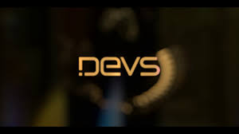
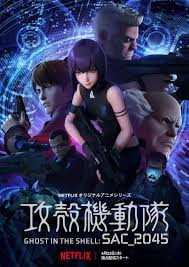
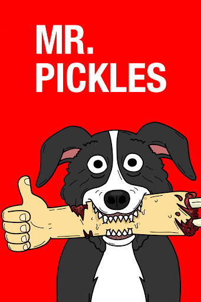

Favourite series
| Order |
Portada |
Title |
Description |
Platform |
| # 1 |
 |
Devs |
A computer engineer investigates the secretive development division in her company, which she believes is behind the disappearance of her boyfriend. |
HBO |
| # 2 |
 |
Ghost in the Shell |
In the near future, Major Mira Killian is the first of her kind: A human saved from a terrible crash, who is cyber-enhanced to be a perfect soldier devoted to stopping the world's most dangerous criminals. |
Netflix |
| # 3 |
|
Mr. robot |
Elliot, a brilliant but highly unstable young cyber-security engineer and vigilante hacker, becomes a key figure in a complex game of global dominance when he and his shadowy allies try to take down the corrupt corporation he works for. |
Amazon |
| # 4 |
 |
Mr. Pickles |
The Goodman family lives with their lovable pet dog, Mr. Pickles, a deviant border collie with a secret satanic streak. |
AdultSwim |